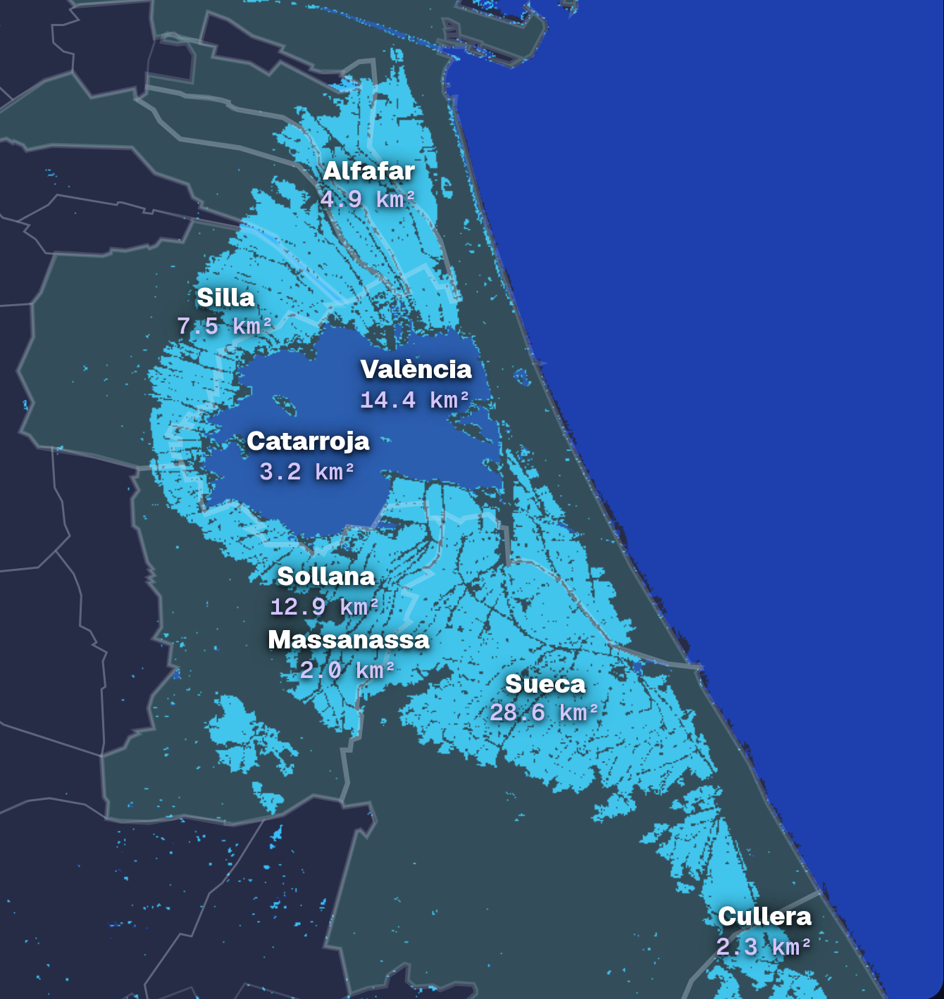
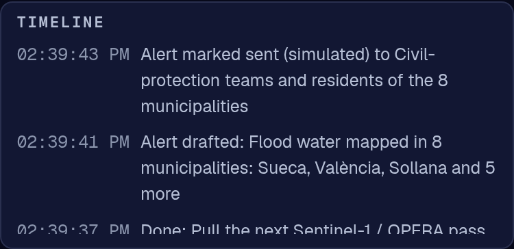
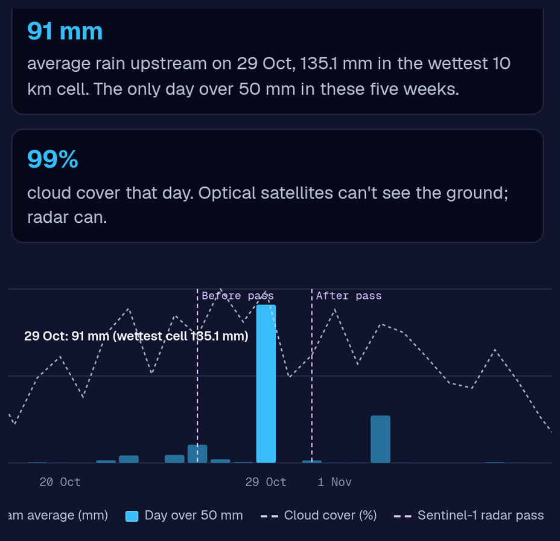
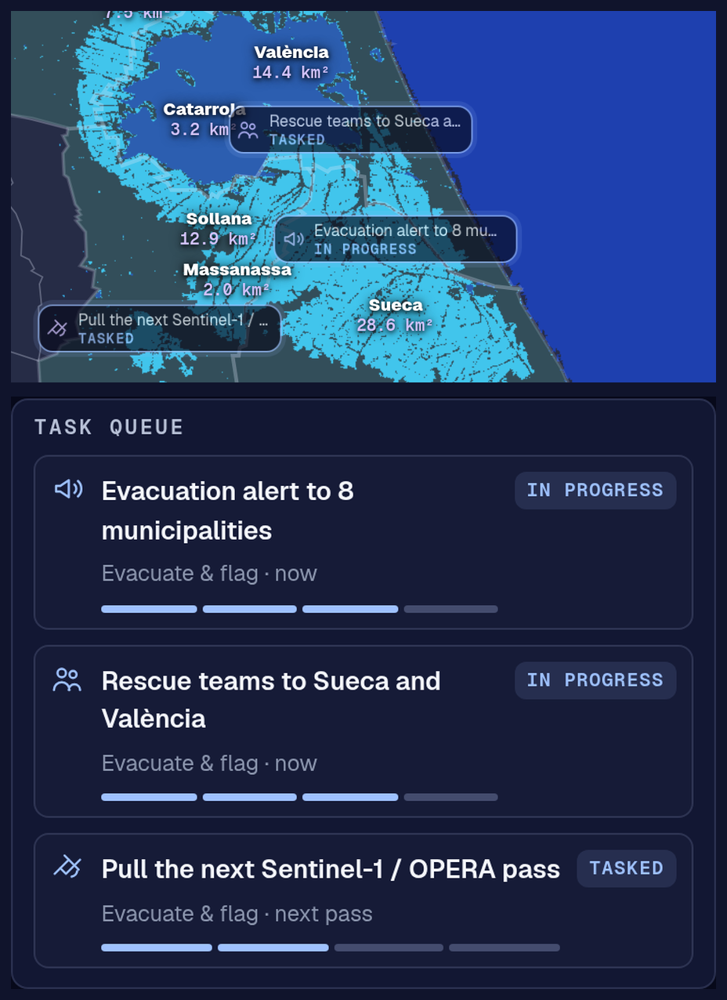
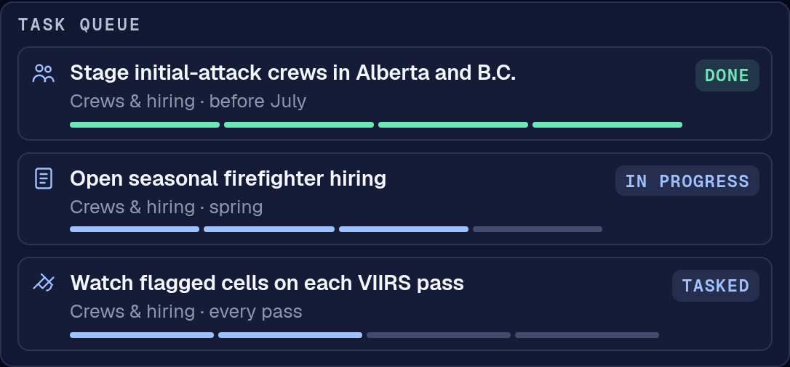
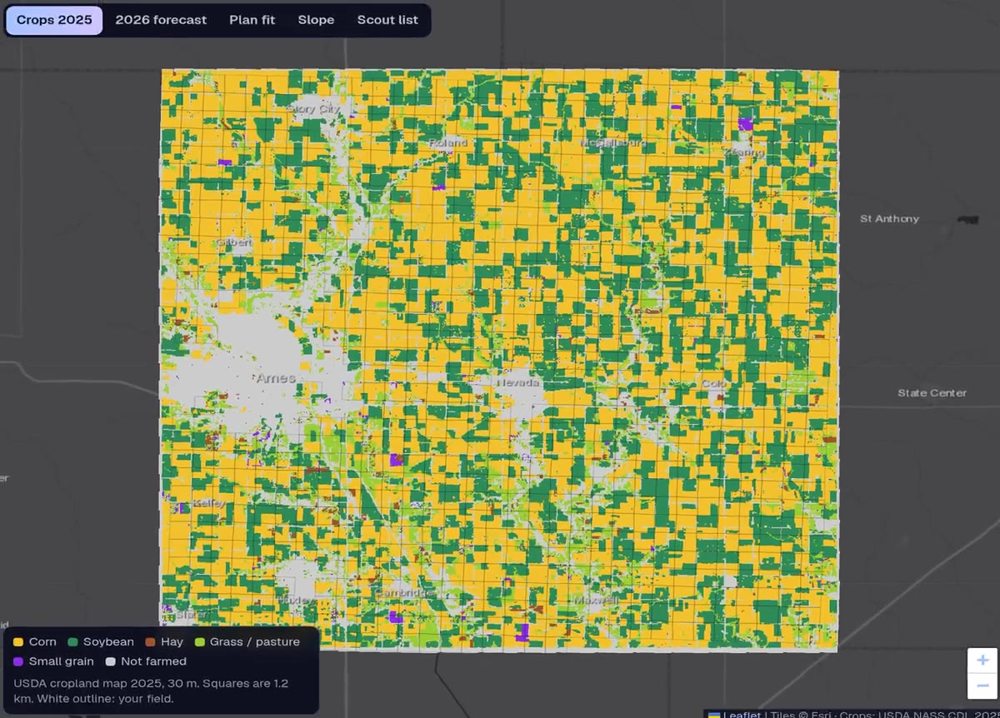

NASA Space Apps 2026 · Be An Earth System Trend Detective! · Orbit to Ground1 / 7
Valencia, Spain
29 October 2024.
About 770 mm of rain, roughly 2½ feet, fell on one town in a day: more than 1½ times what València gets in a whole year. The phone alert went out around 8 PM. By then, more than 150 people had died.

Radar flood map · 31 Oct · 8 townsTasking (simulated)
AEMET event study (Turís) · AEMET normals, València 1981–2010: 475 mm a year · El País, 26 Oct 2025 · map: NASA/JPL OPERA DSWx-S1Team GeoAI Toronto · Parsa Riahi
Story 1 · Valencia, 29 October 20242 / 7
Imagine losing someone you love because no one knew how much rain was coming that day.
From our flood app · NASA rain and cloud, 15 Oct → 20 Nov 2024

Simulated
Our app's timeline · the same night, rewound
E
Elena, emergency coordinator, Catarroja
25 people died in her town. Illustrative composite
red warning for the province
first recorded death
the Poyo ravine surges, after ~1.3 years of València's rain fell at Turís in one afternoon
phone alert; more than 150 already dead
A 12-hour gapfrom the red warning to the phone alert. About 230 people died in the Valencia region.
AEMET (event study; normals 475 mm/yr) · Newtral · El País, 26 Oct 2025 · rain: NASA GPM IMERG V07, cloud: NASA POWER · timeline: our dashboard, simulatedOrbit to Ground
Story 1 · rewind, with Orbit to Ground3 / 7
Rewind. Same night, same data, with Orbit to Ground.
1Signal
Rain piles up upstream
~90 mm upstream on 29 Oct (~135 mm in the wettest cell). 99% cloud: optical is blind.

2Map
Radar sees through cloud
~78 km² of new water, up from ~31. 8 towns hold ~76 km² of it.
Live demo loop
3Alert
One alert to all 8 towns
The water area, the rain and "stay off low ground", ready to send.
Alert (simulated)
4Dispatch
Teams, passes and aid
Rescue teams go to the flagged towns, drones to the streets radar can't see, and the next pass is queued.

Tasking (simulated)
With an upstream rain signal and a radar map, Elena could have had a drafted alert for her town hours before the ~8 PM phone alert, and a map of where the water went.
Hypothetical rewind · tasking and alerts are simulatedOpen the flood demo →▶ 30 s videoNASA GPM IMERG V07 · NASA POWER · NASA/JPL OPERA DSWx-S1 (26 → 31 Oct)
Story 1 · what if it had been there? · illustrative estimate4 / 7
12 hours earlier = an alert before the first death.
Published warning curves put about €1.1 bn of Valencia's €4.8 bn insured loss within reach.
13%6 h earlier · ~2 PM
22%12 h earlier · ~8 AM
30%24 h earlier
~33%48 h earlier
22% × €4.8 bn insured ≈ €1.1 bn an alert around 8 AM lands before the first recorded death (around noon)
The bill, per claim≈ €19,000
€4.8 bn over ~250,000 insurance claims
The water, in city terms58%
~78 km² of new water = more than half the area of the city of València (~135 km²)
The benefit does not stack per day: the curve levels off after about 24 h. The gap on 29 Oct was turning the ~7:30 AM warning into a local alert, not detecting the rain. "Days earlier" is about the map: the rain signal came about 2 days before the first radar pass (31 Oct) and 4 days before the Copernicus map (2 Nov). We give no lives number for Valencia.
Today
Gap on 29 Oct
Orbit to Ground adds
AEMET warning
red at ~7:30 AM, by zone; not an instruction to the public
a drafted, town-specific alert: go up, keep out of garages (simulated)
EFAS notices
emailed to agencies, not binding; 17% chance of a 20-year flood
observed NASA rain + radar on one screen, with a task queue
ES-Alert
~8 PM, "avoid any travel" only
message and target towns pre-filled from the map (simulated)
Copernicus EMS
first maps 31 Oct; province-wide extent 2 Nov
open OPERA radar water each pass, linked to rain and dispatch
Red warning
The danger is known.
What if: the town alert goes out
12 h earlier; drafted by the dashboard (simulated)
Illustrative estimate · alerts simulatedDay (1970) via NHWC · GCA 2019 · Pappenberger 2015 · CCS · El País · EFAS · ESA · València Recull 2024
Story 2 · Hot Spots · the whole fire vertical5 / 7
Nearly 12 M fire detections, 2000–2025The data flags May months ahead: staffing on 15 April gives 16 more days of readiness.
Canada, B.C. → Quebec · fires per year, 2003–2025
Alberta + B.C. · staffingTasking (simulated)

Queue (simulated)
The trend~1,500 more a year
Alberta detections (p = 0.035); B.C. ~2,600 more (p = 0.045)
The watch monthMay
5 of Alberta's 16 unusual fire months since 2000
What if · illustrative
16 more days of full readiness before the first big fire
2016: Horse River started 1 May, the staffing target day. 2023: Drayton Valley started 23 Apr, before full staffing; a 15 April start gives 8 days.
~1,100 fires × 3% ≈ 33 escapes, carrying ~97% of 2.2 M ha ≈ 65,000 ha each
For scale: the escaped May 2016 fire burned ~5,900 km², more than all of Prince Edward Island, moved 88,000 people and cost $8.9 bn. Its review found initial attack was immediate, so we don't claim staffing would have stopped it. The value is readiness across the whole season.
Illustrative estimate · staffing alert and notice are simulatedNASA FIRMS (harmonized MODIS + VIIRS) · MNP 2017, 2025 · KPMG · IBC · The Weather Network · Stocks 2002 · Statistics Canada areas
Story 3 · Field Shift · the whole farm vertical6 / 7
Story County, Iowa · every 30 m pixelRye on the steepest fields: drought insurance, planned before planting.

Crop map · corn, soybean, hay, grass
Drone + scout · 114 squares
Tasking (simulated)
Next-season crop~82%
correct per 30 m pixel (crop history alone: ~81%), held-out 2024–25
The climate trend+19 days
longer frost-free season since 1981 (p = 0.006)
What if · illustrative
In a 2012-type drought, rye on the 92 steepest squares is worth about $1.2 M net.
(~11 bu × ~$6.90 − ~$32) ≈ $44 an acre × ~26,500 acres ≈ $1.2 M
Drought insurance: it costs a little in most years and pays back in a dry one (about 2.4× its seed and planting cost in 2012, per the SARE survey). Iowa's 2012 corn fell 20%.
Illustrative estimate · scouting and drone tasks are simulatedUSDA NASS CDL + Crop Production 2012 · USDA FSA · SARE/CTIC 2012–13 survey · Iowa State (Plastina 2018) · NASA HLS · NASA POWER
One system · how it works7 / 7
Shared NASA inputs, one engine, one loop: signal → map → alert → task.
Team GeoAI TorontoParsa Riahi · Toronto · See it. Decide. Act.
One seed each, not a published benchmark · civil uses only · tasking and alerts are simulated · not affiliated with NASA · nasa-spaceapps-2026.pages.devCode Apache-2.0